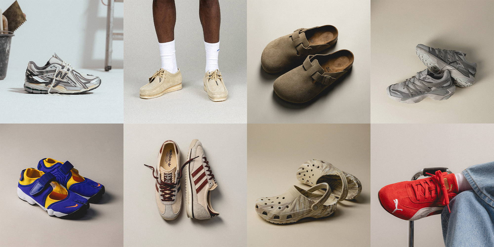
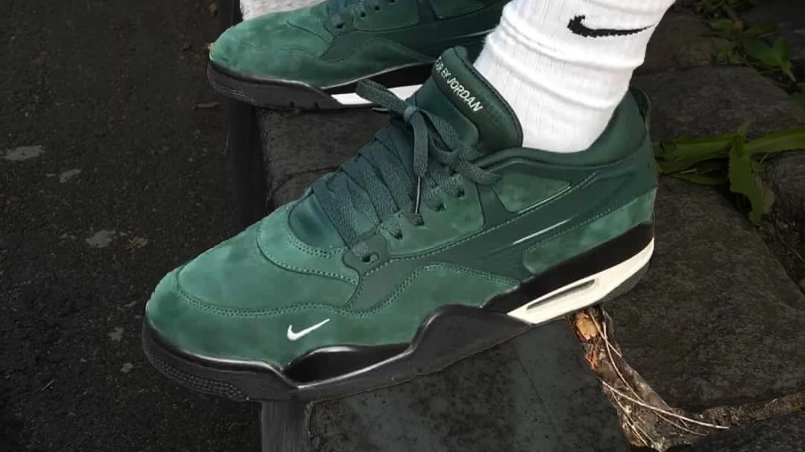
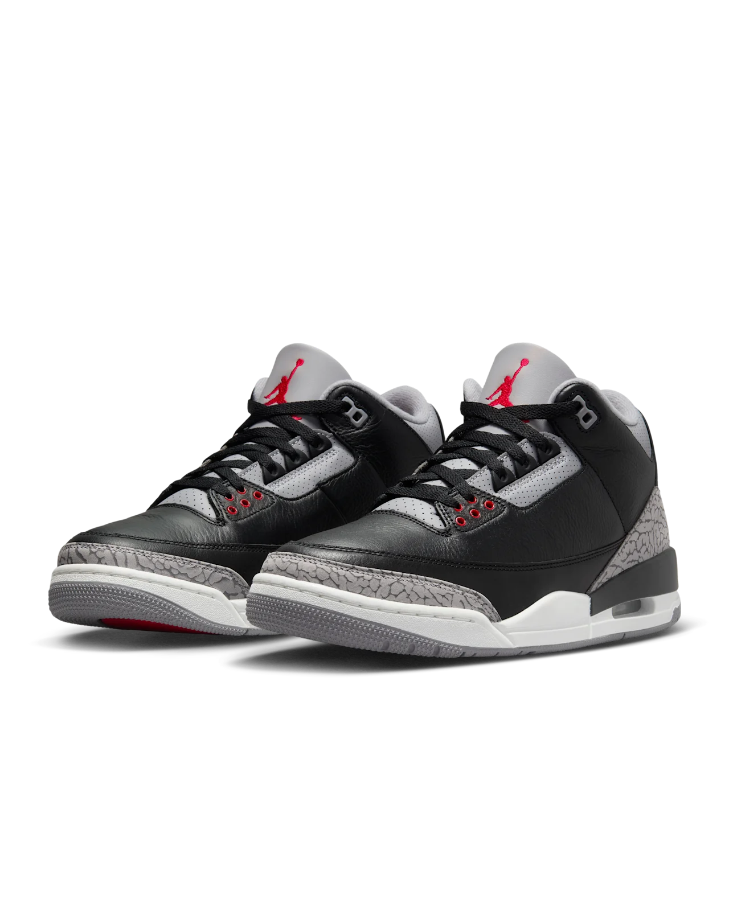
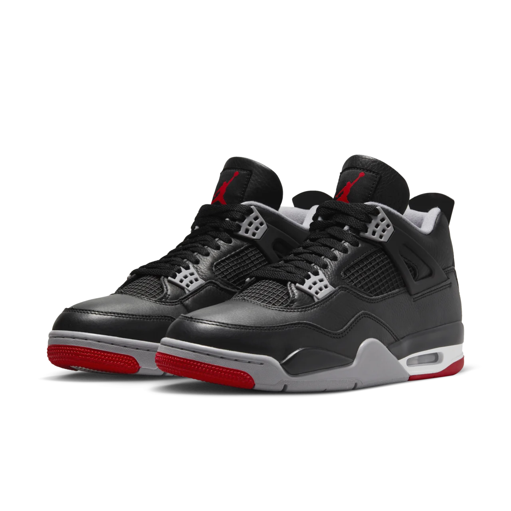

The Best Sneakers Of 2024
It turns out people still care about sneaker of the year lists. hy spend all this time on something so subjective? Do people really put that much weight into ranking the sneakers of the year? This year, those questions were met with a resounding yes.
3. Nigel Sylvester x Air Jordan 4 RM
Release Date:7/20/24
Price:$150
Every once in a while there’s a sneaker and a story that come together to significantly increase how good a shoe actually is. That’s exactly the case for Nigel Sylvester’s Air Jordan 4 RM. That’s not to say that the shoe itself isn’t good without the storytelling around the young Sylvester biking in his grandmother’s driveway, but the two came together to create something of a perfect storm. On top of that, the rollout was arguably the best of the year. Nigel hosted two Go Ride events on the same day on two separate continents, starting in London and then finishing up in New York City with thousands of cyclists in attendance, including Lil’ Yachty. The Jordan 4 RM is not Nigel’s signature sneaker by any means, but it will be nearly impossible to separate him from the shoe going forward. —Ben Felderstein
2. Air Jordan 3 ‘Black Cement' 
Release Date:11/23/24
Price:$220
I could write a million words about this shoe. The “Black Cement" Jordan 3 is likely the greatest Air Jordan of all time. It’s the sneaker that saved Michael Jordan from leaving for Adidas after the failure of the Air Jordan 2. It was retroed in 1994, 2001, 2008, 2011, and 2018. Some of those retros were good, some not so much. Here we are in 2024 and the process of recreating a shoe from the past has become much more of a science. The “Black Cement” 3 from this year is as close to the original as feels possible right now. The shape, the elephant print, the leather. It’s all more subtle than the exaggerated pair from 2018. Even if they had Nike Air on the heel tab. The 2024 pair wasn’t without its issues, either. There were problems of mismatching elephant print. But it wasn’t as prevalent as on the “White Cement” pair from last year. It’s the best retro of one of the best retros of all time. What more could you want? —Matt Welty
1.Air Jordan 4 ‘Bred Reimagined’ 
Release Date:2/17/24
Price:$215
This is a controversial shoe, but it really shouldn’t be. It’s a “Black Cement” Air Jordan 4, or “Bred,“ or whatever. But it’s not in nubuck like the originals from 1989 and every other time that it’s re-released. I’m personally not a fan of these, but I don’t understand the overall hate for them. Would they have been better as the original? Sure. But you can’t always get what you want, and they still were a huge shoe. Earlier in the year, you saw them everywhere. It was an undeniable shoe. Often on these lists, we talk about niche collaborations, things that don’t quite exist outside of the internet and those who talk about shoes on digital platforms. But the Air Jordan 4 is a shoe that you see outside. And the majority of those buying and wearing them don’t quite care that Jordan did them in all leather. Some might not even know the originals were nubuck. Can’t fault them. We’re not all tapped in. Do I want these to be re-released in the future? Probably not. But oddly enough, there will be people who are in their teens now who don’t know anything else who will want to see these Reimagined 4s get retroed in 2030. What a world we live in. —Matt Welty